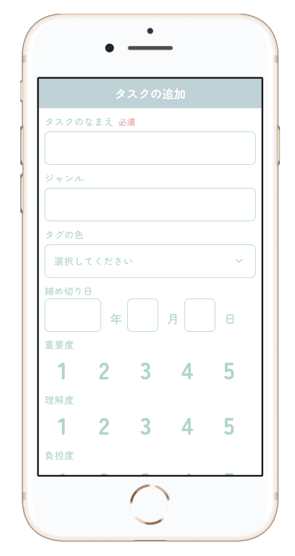

自分の「やりたい」を諦めずに
効率良くタスクを進めて心身の負担を減らします
やりたいことと心身の健康を両立したい
心身の負担を抑えながら、長期的に記憶したい
という人に向けて誕生した
タスク管理アプリ「Sortly」
思考を「寝かせる」
（=冷静になる）
優先順位を可視化することで頭や気持ちを整理
5つの指標で瞬時に並び替え
締め切り日、重要度、理解度、負担度、好き度の5つの指標から二つ選び、二次元マップにタスクをプロットします。タスクの関係性や特性が視覚的にわかりやすくなります。
5段階で設定
それぞれの指標は5段階で設定可能です。締め切り日は締め切りまでの日数で自動的に5段階に振り分けられます。

①タスクを追加
タスクのなまえやジャンル、タグの色、締め切り日を設定し、5つの指標について度数を設定します。優先度は、締め切り日によって自動で度数が割り振られます。
②縦軸と横軸の要素を選んで並び替え
横軸と縦軸を5つの指標から2つ選ぶことで、登録した数値を元にタスクがプロットされます。二次元マップを見ながらスケジュールを立てます。選んだ指標から自身に合ったスケジュールを作成しましょう。
③タスクの詳細確認・編集
2次元マップ内のタスクをタップすると詳細画面が表示されます。ここから詳細の確認、編集、タスクの削除を行うことが可能です。